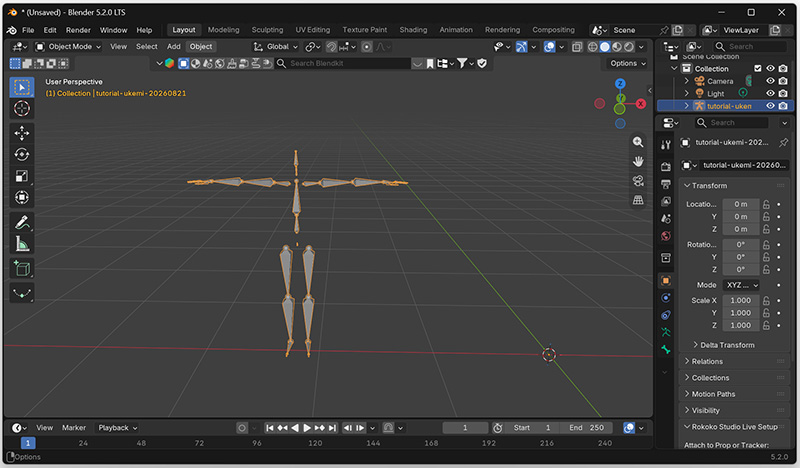
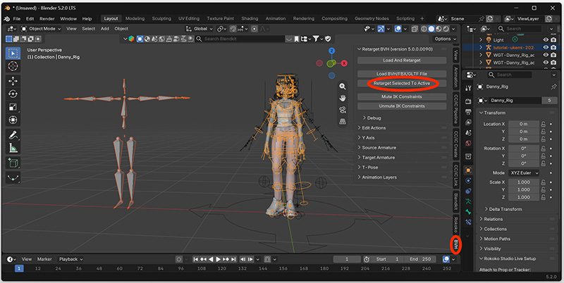
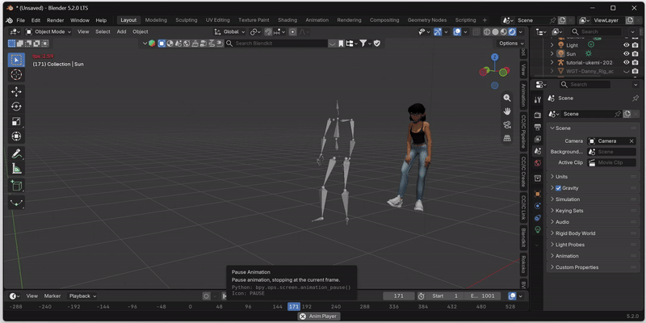

Retargeting to Blender¶
Posetrak exports motion as BVH, a generic mocap interchange format built around Posetrak's own tracking skeleton. Blender's built-in BVH importer will happily load that motion onto an armature shaped exactly like Posetrak's skeleton — but that's rarely the rig you actually want to animate. Getting the motion onto your own character (different bone names, different proportions, possibly a different bone count) is retargeting, and Blender has no retargeting built in — it needs a dedicated add-on.
This page is a generic Posetrak → Blender retargeting workflow. It walks through BVH Retargeter, a free, actively maintained add-on that handles arbitrary source/target bone naming. If BVH Retargeter doesn't fit your pipeline there are other options, for example (ordered from lightweight to more capable but costly)
- Manual retargeting with Copy Rotation bone constraints — no add-on at all, just build the bone-to-bone mapping yourself. Viable for a one-off rig, painful to repeat.
- Rokoko Studio Live for Blender is built around Rokoko's own mocap format, but also accepts generic BVH. Retargeting functionality of the plugin is free but requires creating and logging in to a Rokoko account.
- Auto-Rig Pro (paid) — its Smart/Remap tools can retarget a BVH import onto an Auto-Rig Pro rig, with more automated bone-length matching than BVH Retargeter, at the cost of a purchase.
- Commercial animation software packages like iClone or Cascadeur have extensive tools for motion capture retargeting and cleanup. Both of the aforementioned tools work with Posetrak; stay tuned for dedicated tutorials for those.
The rest of this page covers BVH Retargeter, since it's free, needs no account, and — with the one-time rig profile described below — needs no manual bone mapping for Posetrak's skeleton.
Prerequisites¶
- Blender 4.2 or later (BVH Retargeter's minimum supported version).
- A rigged target character in your
.blendfile. This tutorial uses "Danny", a free human model by Ethan Snell that has already been rigged with Blender's Rigify tool. You can load the model from the artist's web site. - A BVH file exported from Posetrak.
Installing BVH Retargeter¶
- In Blender, open Edit → Preferences → Get Extensions, search for "BVH", and install BVH and FBX Retargeter (by Thomas Larsson).
- Enable it if it isn't already (extensions installed this way are enabled by default).
- A BVH Retargeter panel appears in the 3D viewport sidebar (
Npanel) whenever an armature is selected.
If your Blender build doesn't have the Extensions platform, or you want to track a specific release, the same add-on is published at the author's project page — install the zip via Edit → Preferences → Add-ons → Install….
Exporting BVH from Posetrak¶
In Posetrak, navigate to the trial's tracking results for the person. Click the "Export BVH..." button in the information pane on the right side of the window.
Importing into Blender¶
Use Blender's built-in importer: File → Import → Motion Capture (.bvh).
- Leave Forward/Up axes at their defaults (
-Z Forward,Y Up) — that already matches--coord yup. - Select "Update scene FPS" and "Update scene duration" so that the scene's timeline works as expected.
This gives you a new armature shaped like Posetrak's tracking skeleton, animated, with frame 1 holding the T-pose. Nothing here uses BVH Retargeter yet.

BVH Retargeter one-time setup: the Posetrak rig profile¶
There is no single "right" convention for representing a human skeleton; most 3D packages and individual artists have different preferences. Unfortunately BVH files include very little information about the convention used, which can make retargeting an animation in another application painful. BVH Retargeter tries to guess a source rig's bone roles and the joint angles that put the model to T-pose, but for Posetrak's skeleton both guesses need some help:
- Posetrak's neck has two bones (
neck1,neck2) before the head, but BVH Retargeter's automatic bone-role heuristic always assumes exactly one neck bone — it mislabelsneck2as the head and leaves the real head bone unmapped, so head motion comes out visibly wrong. - BVH Retargeter's automatic T-pose guess deliberately never touches clavicle/shoulder or foot/ankle bones — it only forces arms, legs, and fingers into shape, and leaves everything else at its raw imported rest orientation. Posetrak's BVH rest-pose bone directions for those two joints aren't anatomically correct on their own (the true T-pose only appears once frame 1's rotation is applied on top), so left alone, clavicles and feet come out of retargeting rotated roughly 90° off.
Both are fixed with two small JSON files that tell BVH Retargeter exactly how to read Posetrak's rig, instead of guessing:
- Get
known_rigs/posetrak.jsonandt_poses/posetrak.jsonfromexamples/retargeting/blender/bvh-retargeter/in this repository. -
Find your BVH Retargeter install folder:
OS Path Windows %APPDATA%\Blender Foundation\Blender\<version>\extensions\user_default\retarget_bvh\macOS ~/Library/Application Support/Blender/<version>/extensions/user_default/retarget_bvh/Linux ~/.config/blender/<version>/extensions/user_default/retarget_bvh/ -
Copy
known_rigs/posetrak.jsoninto that folder'sknown_rigs/subfolder, andt_poses/posetrak.jsonintot_poses/. - In Blender, run BVH Retargeter → Init Known Rigs (or just restart Blender) so it rescans both folders.
You only need to do this once per Blender install.
If you're tracking a custom skeleton with different joint names or a different bone count, these two files won't match yours as-is — see "Building your own rig profile," below.
Retargeting¶
- Have both armatures in the scene: your imported Posetrak BVH (the source) and your character rig (the target), already positioned/scaled sensibly relative to each other. If you have scaled the target rig, you MUST apply all transforms before retargeting (Object -> Apply -> All Transforms).
- Click the source armature (the one you imported from Posetrak BVH file) to select it, then shift-click the target armature last so both are selected and the target is active. The source should show as orange and the target as yellow.
- Click BVH Retargeter → Retarget Selected To Active.

- In the confirmation dialog:
- Source — with the Posetrak rig profile installed, Auto
Source should detect "Posetrak" automatically for both Source
Rig and Source T-Pose; check that the dropdowns show that before
confirming. If it didn't, uncheck Auto Source and
set Source Rig to
Automaticand Source T-Pose toPosetrakmanually. - Target — if your target is a rig BVH Retargeter recognizes out of the box (Rigify, Mixamo-compatible, etc.), Auto Target should just work. If it's a custom rig and you see the same clavicle/foot rotation problem on the target after retargeting, it needs the same treatment — see below.
- Source — with the Posetrak rig profile installed, Auto
Source should detect "Posetrak" automatically for both Source
Rig and Source T-Pose; check that the dropdowns show that before
confirming. If it didn't, uncheck Auto Source and
set Source Rig to
- Confirm. Retargeting takes some time, depending on the length of your capture, and Blender will be unresponsive while BVH retargeter works. When ready, scrub the timeline to check the result.

Usually you need to do some adjustments to motion capture animations to get high quality results. The tracking data might have errors, and the target model's body dimensions are seldom exactly identical to those of the tracked person, which can cause e.g. feet sliding on the ground and hands penetrating other body parts. There are many tutorials on cleaning up motion capture data in Blender — Google is your friend here.
Auto Source / Auto Target silently override your dropdown choices
Whichever of Auto Source / Auto Target is checked re-guesses the rig and T-pose from scratch every time you run an operator, overwriting whatever you'd manually selected — even if you picked the right T-pose moments earlier. If a manual T-pose selection ever seems to have "no effect," this is almost always why: check the checkbox, not just the dropdown.
Building your own rig profile¶
If your target character rig (or a custom Posetrak skeleton YAML) isn't recognized automatically and shows the same kind of misidentified or misrotated joints, the fix is the same two-file pattern used above for the source side:
- Fix the T-pose. Pose the rig correctly — at frame 1 for a
Posetrak BVH, or by hand for a target character rig — select it, and
run BVH Retargeter → Save T-Pose, saving into that install's
t_poses/folder. This captures every bone's current rotation exactly as posed. - Fix bone identification, only needed if the automatic
name/hierarchy guess gets something wrong (e.g. an unusual chain
length like Posetrak's two-bone neck): write a
known_rigs/<name>.jsonwith a"bones"map from the rig's real bone names to BVH Retargeter's canonical names (hips,spine,chest,neck,neck-1for a second neck segment,head,shoulder.L/.R,upper_arm.L/.R, …). Useknown_rigs/posetrak.jsonin this repository as a worked example, or any of the simpler files bundled with the add-on itself (itsknown_rigs/mixamo.jsonis a good starting point). - Add
"t-pose-file": "<name>"to theknown_rigs/<name>.json(matching the"name"field in your saved T-pose file), so Auto Source/Auto Target picks up both automatically once it recognizes the rig. - Init Known Rigs, then retarget as above.
Troubleshooting¶
Shoulders and/or ankles rotated ~90° after retargeting
: The Posetrak T-pose file isn't being applied. Check: the two JSON
files are actually in the add-on's known_rigs//t_poses/ folders
(not a subfolder, not renamed); Init Known Rigs was run after
copying them; and — per the warning above — Auto Source is either
correctly detecting "Posetrak," or is unchecked with "Posetrak" picked
manually in both dropdowns.
Head motion looks offset, or barely moves
: Almost certainly the two-bone-neck issue described above. Confirm
known_rigs/posetrak.json is installed and picked up — List Source
Rig should show neck1 → neck, neck2 → neck-1, head → head.
Retargeted motion just sits in the T-pose the whole time
: Check that the frame range used by the retarget operator covers your
actual motion, and that frame 1 (the T-pose reference the operator
needs) is actually present — it isn't if you exported with
--no-rest-frame.
See also¶
- Your first capture — where this fits in the overall workflow.
Screenshots still needed: the BVH Retargeter sidebar panel, the install-folder location in Preferences, the Retarget confirmation dialog with Auto Source/Auto Target unchecked, and a before/after of the shoulder & foot orientation fix.